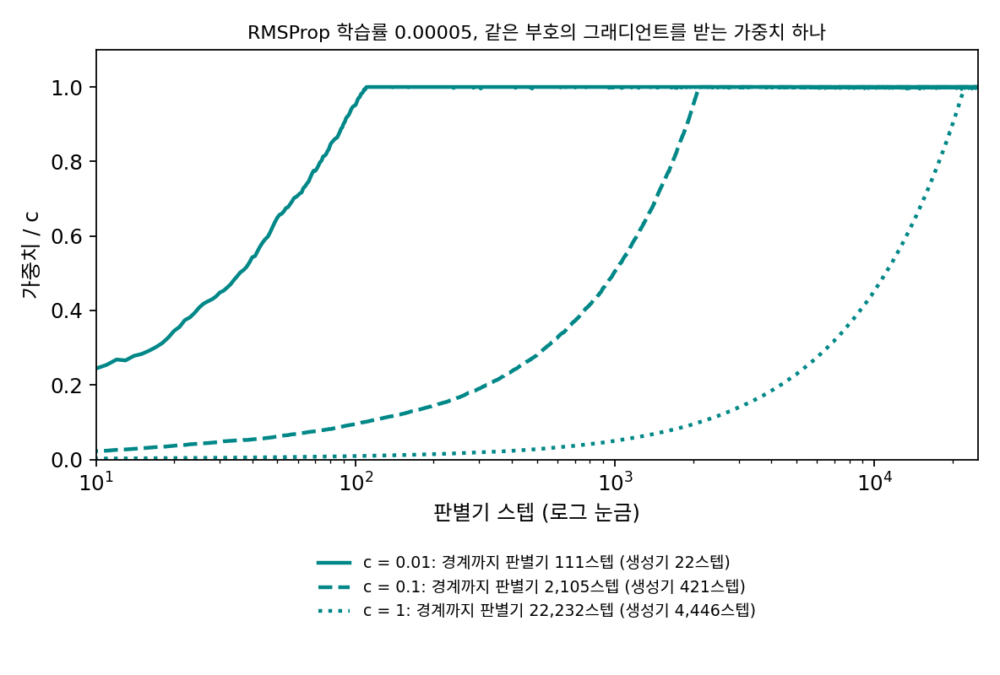
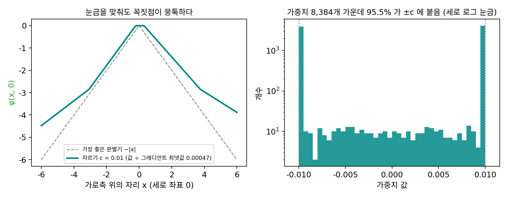
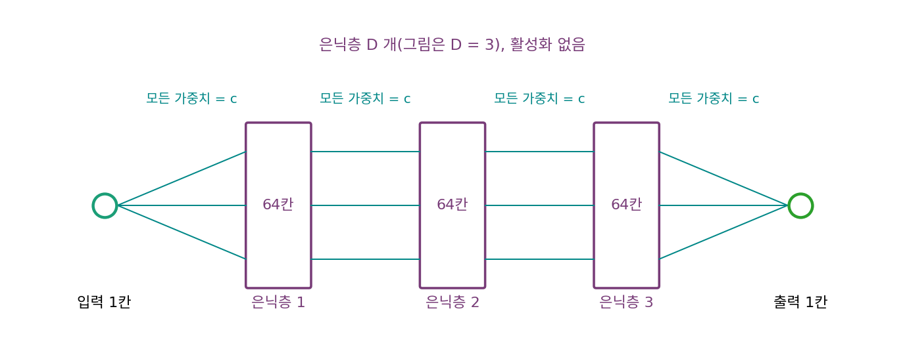
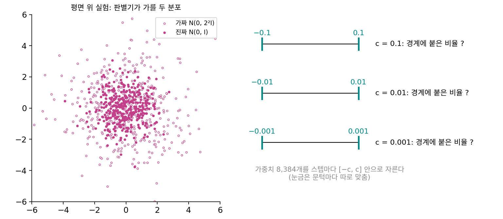

가중치 자르기: 판별기를 립시츠로 묶는 첫 방법
판별기 φ를 신경망으로 만들면 −|x| 같은 꺾인 모양도 그릴 수 있으니, 남은 숙제는 립시츠 상수를 묶는 제약이다. 립시츠 연속의 곱셈 부등식을 떠올리자. 층을 쌓은 신경망의 립시츠 상수는 층마다의 스펙트럼 노름(행렬이 길이 1인 입력을 가장 크게 늘이는 배율, 곧 가장 큰 특잇값)을 곱한 값을 넘지 않는다. 그렇다면 가중치 하나하나가 너무 커지지 않게만 막아도 행렬의 배율이 묶이고, 신경망 전체의 립시츠 상수도 어떤 정해진 K 아래로 묶인다. 문제 8에서 본 대로 K가 1일 필요는 없는데, 그렇다면 가중치를 묶는 가장 단순한 방법은 무엇일까?
역사: 「분명히 끔찍한 방법」
아르좁스키와 동료들이 고른 것은 가장 단순한 방법으로, 판별기를 한 스텝 학습시킬 때마다 모든 가중치를 [−c, c] 안으로 잘라 넣는다. 그들이 적은 기본값은 c = 0.01, 학습률 0.00005, 미니배치 64, 생성기 한 스텝에 판별기 다섯 스텝이었다. 그런데 같은 논문의 바로 다음 문단은 이렇게 시작한다. 「가중치 자르기는 립시츠 조건을 지키는 분명히 끔찍한 방법이다(Weight clipping is a clearly terrible way to enforce a Lipschitz constraint).」 그들은 c가 크면 가중치들이 경계에 닿기까지 오래 걸려 판별기를 끝까지 학습시키기 어렵고, c가 작으면 층이 많을 때 그래디언트가 사라지기 쉽다고 적었다. 가중치를 구면 위로 사영하는 것 같은 변형도 해 봤지만 별 차이가 없어서 단순한 자르기를 남겼다며, 신경망에서 립시츠 조건을 지키는 더 나은 방법을 찾아 달라고 다른 연구자들에게 권했다.


스스로 끔찍하다고 적은 방법을 왜 논문에 넣었어요? 더 나은 방법을 찾을 때까지 기다릴 수도 있었잖아요.

판별기의 립시츠 상수가 1 이하인지 확인하려면 무엇을 재야 할까요?

음, 모든 두 점 사이에서 출력 차이를 입력 차이로 나눈 값의 최댓값이요. 점이 끝없이 많으니까… 그래디언트 길이의 최댓값을 공간 전체에서 찾아야 하네요.

신경망에서 그 최댓값을 정확히 구하는 문제는 NP-어려움, 곧 신경망이 커지면 계산량이 감당할 수 없이 불어나는 부류라는 것이 2018년에야 증명됐어요. 2017년 1월에는 립시츠 상수를 값싸게 재는 방법도, 묶는 방법도 손에 쥔 것이 없었어요.

그럼 가중치 자르기는 적어도 확실히 묶이기는 하니까 고른 거네요. 가중치가 ±0.01 안에 있으면 층마다 배율이 어떤 값을 못 넘으니까요.
묶이는 건 확실하고, 코드 한 줄이면 됐죠. 그래서 다른 연구자들에게 더 나은 방법을 찾아 달라고 적은 거예요.

묶이기는 하는데 끔찍하다면, 잘라 넣은 판별기는 실제로 어떤 모양이 되길래 그럴까요?
평면 위의 판별기 실험
자르기가 판별기에게 무슨 일을 하는지 실제로 학습시켜 보자. 문제 9의 물음을 평면으로 옮긴다. 진짜 분포 p는 평면의 표준정규분포 N(0, I), 가짜 분포 q는 두 배로 퍼진 N(0, 2²I)이다. 가장 좋은 판별기는 원점에서 멀수록 점수가 내려가는 원뿔 −‖x‖이고, 바서슈타인 거리의 참값은 E‖가짜‖ − E‖진짜‖ = √(π/2) × (2 − 1) = 1.2533이다(평면 표준정규 샘플의 길이 평균이 √(π/2)). 판별기는 입력 2개, 은닉층 세 개(각 64칸, ReLU), 출력 1개인 신경망이고 가중치는 8,384개다(바이어스는 빼고 센 수). 가중치를 스텝마다 [−c, c]로 자르며 RMSProp으로 6,000스텝 학습시켰다(씨앗 고정).
c = 0.01로 학습한 판별기가 매긴 점수 차 Ep[φ] − Eq[φ]는 0.00045다. 참값 1.2533과는 자릿수부터 다르다. 그런데 이 판별기의 그래디언트 길이는 평면 어디서도 0.00047을 넘지 않는다. 문제 8에서 본 대로 그래디언트 상한이 K인 판별기의 점수 차는 K × W₁을 넘지 못하니, 점수 차를 그래디언트의 최댓값으로 나눠야 W₁과 견줄 수 있다. 나누면 0.956으로, 참값의 76%다.
76%에 그친 것은 판별기의 모양 때문이다. 아래 그림의 왼쪽은 판별기를 가로축 위에서 자른 단면을 그래디언트의 최댓값으로 나눠 그린 것이다. 가장 좋은 판별기 −|x|처럼 원점에서 뾰족하게 꺾이지 못하고 원점 둘레가 평평하며, 원점에서 3 넘게 떨어진 곳에서는 기울기가 모자라 꺾은선이 다시 한 번 꺾인다. 오른쪽은 학습이 끝난 가중치 8,384개의 분포로, 95.5%가 −0.01이나 0.01인 자르는 경계에 붙어 있다. 판별기는 점수 차를 키우려고 모든 가중치를 끝까지 밀었고, 밀린 가중치는 경계에서 멈췄다. 가중치 하나하나가 고를 수 있는 값이 사실상 둘뿐이니, 판별기가 그릴 수 있는 모양도 그만큼 좁아진다.

이렇게 판별기를 학습시키는 스텝마다 모든 가중치를 정해진 구간 [−c, c] 안으로 잘라 넣어 판별기의 립시츠 상수를 묶는 방법을 가중치 자르기 (가중치마다 상한을 두기 / weight clipping)라 한다.
ML에서: 모멘텀이 판별기를 흔들다
WGAN 논문에는 옵티마이저 이야기도 들어 있다. 그들은 판별기를 모멘텀이 있는 Adam(β₁ > 0)으로 학습시키거나 학습률을 높이면 학습이 가끔 불안정해진다고 보고했다. 손실이 튀고 그림이 나빠질 때마다 Adam 의 스텝과 그래디언트 사이의 코사인이 음수로 돌아서 있었고, 그런 일은 불안정할 때만 있었다. 판별기의 손실은 생성기가 움직이는 만큼 계속 모양이 바뀌는데, 모멘텀은 지난 스텝의 방향을 이어 가니 이미 낡은 방향으로 밀었다는 것이다. 그래서 그들은 모멘텀 없이 그래디언트 제곱의 평균으로 스텝만 나누는 RMSProp으로 바꿨다. 맴도는 최소최대 문제에서는 지난 스텝을 기억하는 것이 득이 아닐 수 있다는 관찰이다.
문제 10. 자른 가중치와 깊이
폭이 64칸인 은닉층 D개를 쌓은 판별기에서 활성화 함수를 빼고(선형), 모든 가중치를 문턱 c로 꽉 채웠다고 하자. 이때 입력이 1만큼 바뀌면 출력은 cD+1 × 64D만큼 바뀐다(입력 1칸, 출력 1칸으로 놓고 계산). (가) c = 0.01일 때 D = 1, 3, 6, 10에서 이 그래디언트는? (나) c = 0.1이면? (다) 깊이와 상관없이 그래디언트가 거의 그대로인 c는?


c가 작을수록 그래디언트가 묶이니까 안전하겠죠. 0.01로 계산하면 D = 1에서 0.0064, 3에서 0.0026, 6에서 0.00069, 10에서 0.00012예요.
D가 하나 늘 때마다 그래디언트는 몇 배가 되죠? c = 0.1에서도 해 보세요.
0.01이면 층마다 0.01 × 64 = 0.64배라서 쌓을수록 줄어요.
0.1에서는요?

6.4배라서 D = 3에서 26, 6에서 6,870, 10에서 1.15 × 10⁷이에요. 자르는 문턱을 열 배 바꿨을 뿐인데, 열 층에서는 그래디언트가 10¹¹배, 곧 천억 배 달라져요.
층마다 곱해지는 배율이 c × 64니까, 그게 1이 되는 c = 1/64 = 0.0156이면 깊이와 상관없이 0.0156이야. 그보다 조금만 작아도 깊을수록 사라지고, 조금만 커도 깊을수록 터져.
아르좁스키와 동료들이 「c가 작으면 층이 많을 때 그래디언트가 사라진다」고 적은 게 이 계산이에요. 그럼 c = 1/64로 맞추면 문제가 다 풀릴까요?
이건 가중치가 모두 같은 부호로 꽉 찬 가장 나쁜 경우의 계산이잖아요. 실제 판별기에서는 부호가 섞이고 ReLU가 칸을 지우니까 배율이 층마다 달라질 것 같아요.
폭을 바꾸거나 층마다 칸 수가 다르면 맞는 c도 바뀌겠네.

그러니까 문턱 하나로 모든 층의 배율을 1 근처에 맞추기는 어려워요. 수열 시간에 공비가 1보다 조금만 작아도 0으로, 조금만 커도 무한대로 가던 거랑 같아요.

층마다 0.64배면 여섯 층 지나면 0.07배네요. 전달 게임에서 사람마다 말을 조금씩 작게 전하면 열 명째에는 안 들리는 거랑 같아요.
문제 11. 경계에 붙은 가중치
평면 위 실험에서 자르기로 학습한 판별기를 본다. (가) c = 0.01, 0.1, 0.001에서 경계 ±c에 붙은 가중치의 비율은? (나) 그래디언트 길이의 최댓값으로 나눈 추정값은 참값 1.2533의 몇 %인가? (다) 가중치가 두 값에 몰리면 판별기가 그릴 수 있는 모양에 무슨 일이 생기는가?

(가)는 돌려 봤어요. c = 0.1이면 74.8%, 0.001이면 99.6%가 경계에 붙어요. 0.01에서는 95.5%였고요. (나)는 0.1에서 점수 차 3.661을 그래디언트 최댓값 4.108로 나누면 0.891이라 71%, 0.001에서는 1.014라 81%예요. 문턱이 작을수록 더 잘 맞히니까 아주 작게 잡으면 되겠네요.
0.001에서 판별기가 매긴 점수 차는 그대로 얼마죠?
4.3 × 10⁻⁸이에요. 그래디언트 최댓값도 4.2 × 10⁻⁸이고요. 나눈 값은 81%로 그럴듯한데…
생성기에게 가는 그래디언트는요?

거의 0이에요. 문제 10의 계산으로 치면 c = 0.001에서는 층마다 0.001 × 64 = 0.064배씩 줄어드는 셈이에요.
그리고 셋 다 80% 언저리에서 멈췄어. 문턱을 바꿔도 모양이 나아지지 않는다는 뜻이야. 가중치가 대부분 경계의 두 값 가운데 하나라면, 각 층은 「+c 아니면 −c」로 이루어진 행렬에 가까워. 그런 행렬을 몇 개 쌓아서 만들 수 있는 함수는 많지 않아.
판별기가 점수 차를 키우려면 그래디언트가 커야 하죠. 자르기 아래에서 그래디언트를 키우는 가장 쉬운 길은 무엇일까요?
가중치를 모두 경계까지 미는 거예요?
그러면 판별기가 그릴 수 있는 모양은요?
점수 차를 키우는 데 가중치를 다 써 버리니까, −‖x‖처럼 꺾인 모양을 제대로 그리는 데는 쓸 여유가 없어요.
제약이 그래디언트가 아니라 가중치에 걸려 있어서 그런 거야?

응. 그래서 「그래디언트를 1로」가 아니라 「가중치를 끝까지」로 학습이 흘러가. 최적화 시간에 제약을 엉뚱한 변수에 걸면 해가 모두 경계로 몰리던 것과 같네.
굴라자니와 동료들이 자르기로 학습한 판별기는 너무 단순한 함수만 배운다고 했다더니, 이 그림이 그거네요. 과제 분량을 「문단마다 세 줄 이하」로 묶으면 다들 세 줄을 꽉 채우고, 정작 하고 싶은 말은 못 쓰는 거랑 같아요.